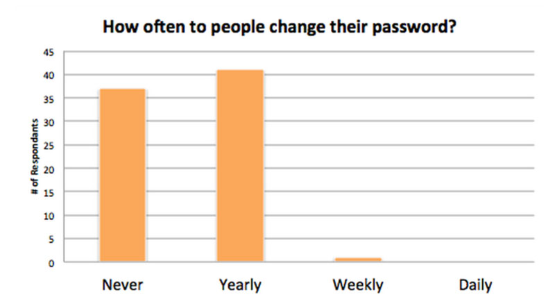
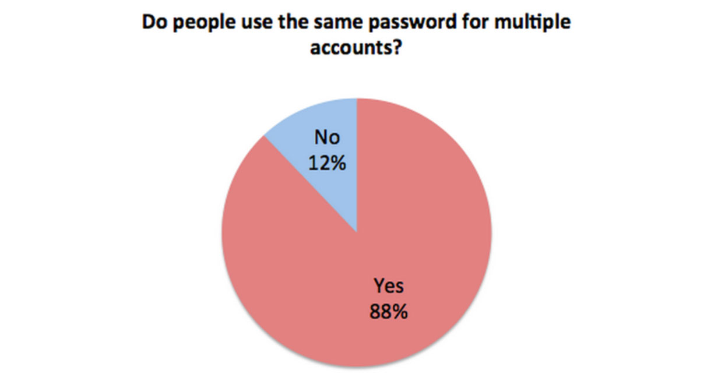
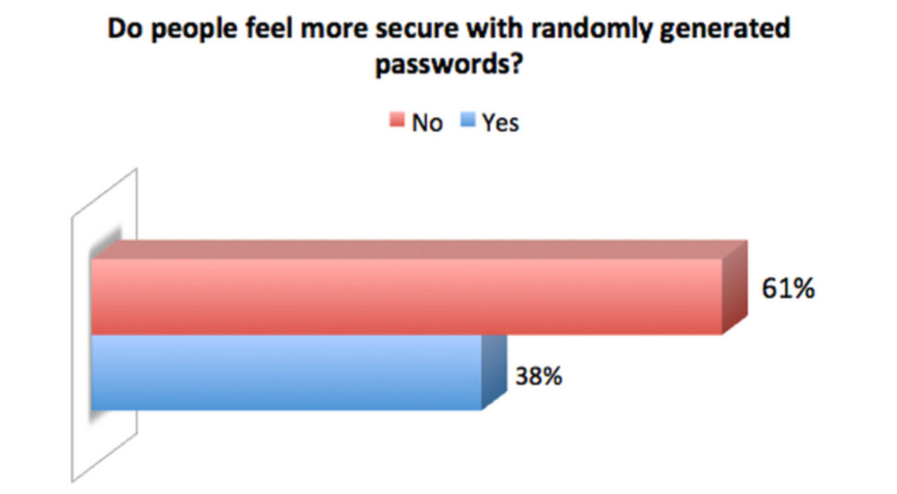
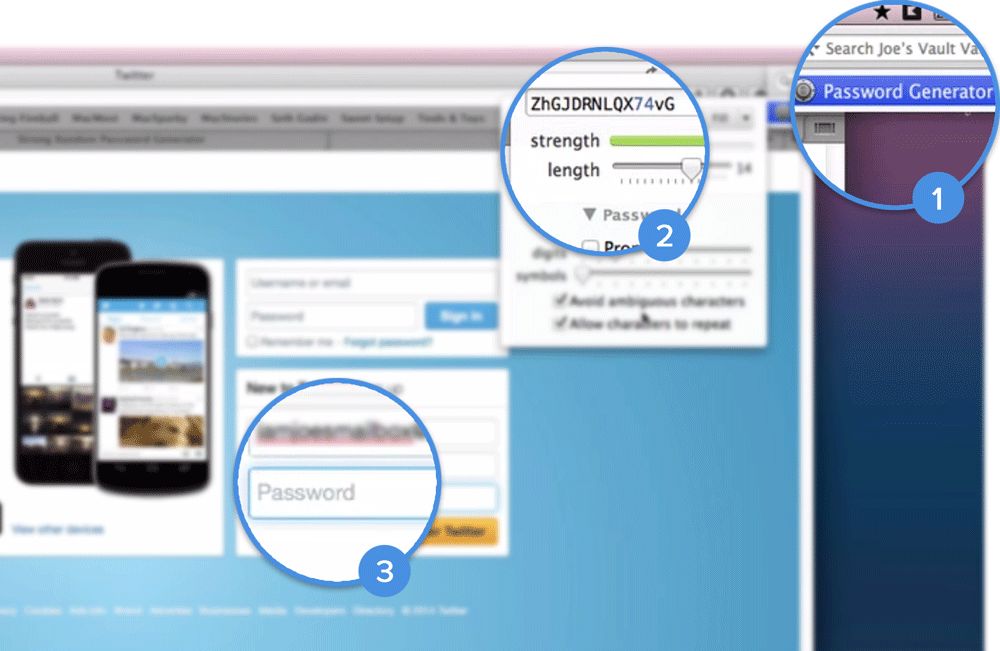

discover the problem
why do people keep saving simple passwords into the vault?
Meet our personas

Robert
Male | 50s | Retired Officer
Low tech ability. Store important information into the 1Password vault. Concern highly about information security.
"I want it secure and under my control."

Lisa
Female | 20s | Freelancer
Social media enthusiast. Tired of remembering passwords. Does not know much about computer security.
"I use all the popular social media. Every day!"
How do people use their password?
  What's wrong with the current design?

-
Hard to find the generator
Password generator is hiding inside the tool bar icon.
-
Totally random password
Password generated is totally random, which is robotic and cold for users.
-
Lack of notification
There is no notification about weak password.